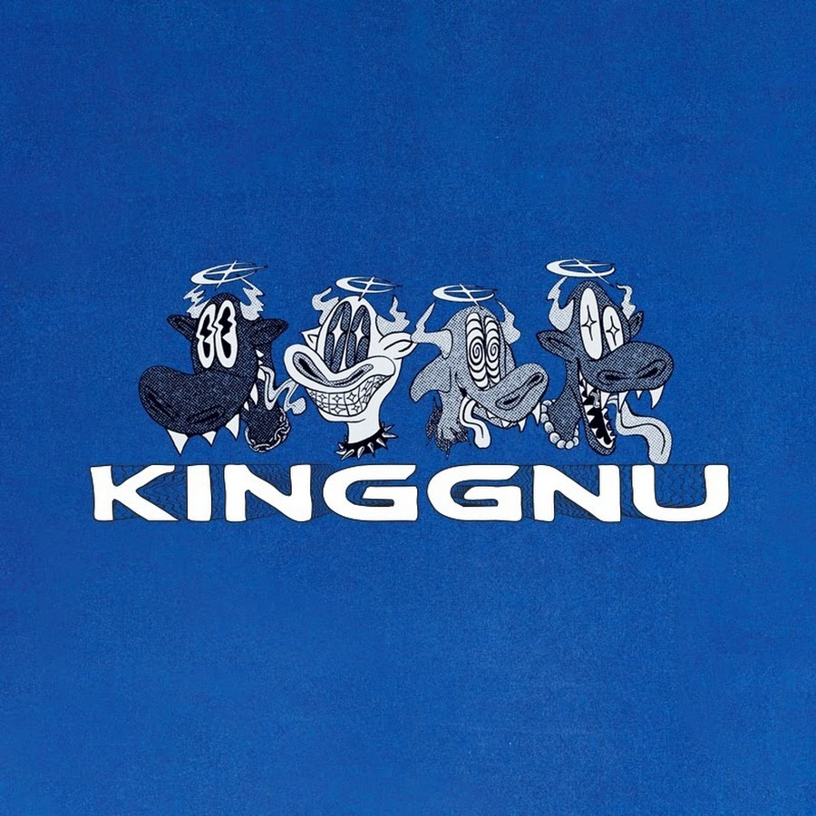

취소표로 시작해
J-LIVE를 만들기까지
공연 정보를 정리하는 사람보다 먼저, 공연을 기다리고 티켓을 구하고 현장에 가는 한 명의 팬으로서 이 사이트를 시작했습니다.
여일육 작성 · 2026년 8월 15일

영화와 음악이 이렇게 어울릴 수 있구나
원래 저는 팝송을 주로 들었습니다. 초등학교 5학년 때 영화 너의 이름은.을 본 뒤 듣는 음악의 범위가 달라졌습니다. 화면 속 장면과 OST가 따로 움직이는 것이 아니라 하나의 감정처럼 이어지는 경험이 신기했습니다. “영화와 음악이 이렇게 어울릴 수 있구나”라고 처음 생각했고, 그때부터 애니메이션과 J-POP을 자연스럽게 찾아 듣기 시작했습니다.
처음부터 일본 음악을 체계적으로 알았던 것은 아닙니다. 작품에서 들은 곡의 제목을 찾고, 같은 아티스트의 다른 노래를 이어 듣는 식이었습니다. 좋아하는 곡이 늘면서 한국에서 실제로 볼 수 있는 공연에도 관심이 생겼지만, 공연 날짜와 예매 시작일, 선예매 조건은 서로 다른 공지에 흩어져 있었습니다. 지금 J-LIVE가 공연일과 일반예매일을 같은 달력에 놓는 이유도 그때의 불편함과 연결되어 있습니다.
「逆夢」에서 시작해 세 번의 서울 공연으로
제가 가장 좋아하는 밴드는 King Gnu이고, 멤버 중에서는 보컬 이구치 사토루를 특히 좋아합니다. 고등학교 3학년 때 극장판 주술회전 0에서 「逆夢(역몽)」을 들었습니다. 제가 알고 있던 노래들과는 무언가 다르게 느껴졌고, 음악을 듣다가 눈물을 흘린 것도 그때가 처음이었습니다. 한 곡을 계기로 밴드의 다른 음악을 찾아 듣기 시작했고, 지금 가장 좋아하는 곡은 「雨燦々(아메산산)」입니다.
마침 2024년 King Gnu 서울 공연의 티켓팅이 진행되고 있었습니다. 처음부터 표를 구한 것은 아니었습니다. 취소표를 계속 확인한 끝에 4월 19일 올림픽홀 공연에 들어갈 수 있었습니다. J-LIVE의 관람 기록에는 이 날짜를 실제로 다녀온 공연으로 남겨 두었습니다. 취소표를 기다리는 동안 예매처, 날짜, 좌석 가격과 공지를 여러 창에서 반복해서 확인했던 경험은 “한곳에서 최신 상태를 확인할 수 있어야 한다”는 생각으로 이어졌습니다.
2026년에는 6월 20일과 21일 KSPO DOME 공연을 양일 모두 관람했습니다. 같은 아티스트의 공연이라도 날짜가 다르면 하나의 일정으로 뭉뚱그려 보기보다 회차별로 저장할 필요가 있다는 것을 직접 느꼈습니다. 그래서 J-LIVE는 이틀 공연을 각각의 날짜로 표시하면서도 같은 투어의 회차라는 관계를 함께 보여줍니다. 팬에게는 “King Gnu 공연이 있다”보다 내가 가는 토요일과 일요일의 시간, 티켓과 공지를 구분하는 일이 더 중요하기 때문입니다.
고척스카이돔에서 확인한 대형 공연의 준비 범위
Fujii Kaze 내한 공연도 직접 관람했습니다. J-LIVE에 남긴 기록은 2024년 12월 14일 고척스카이돔 공연입니다. 돔 공연을 준비할 때는 무대에 오르는 아티스트와 대표곡만 알아서는 충분하지 않았습니다. 어느 역으로 갈지, 공연장까지 얼마나 걸을지, 큰 가방을 어떻게 할지, 공연이 끝난 뒤 많은 관객과 함께 어떻게 이동할지도 미리 확인해야 했습니다.
이 경험은 공연장 가이드에 교통만 적지 않고 화장실, 물품 보관, 게이트와 귀가 동선을 나누어 기록하게 된 계기 중 하나입니다. 다만 제가 당시 정확한 좌석 번호와 층별 이동 시간을 별도로 기록하지 않았기 때문에, 지금 와서 기억에 의존한 시야 평가나 “몇 분이면 도착한다”는 식의 수치를 만들지는 않습니다. 확인 가능한 시설 정보는 공연장 공식 자료와 연결하고, 공연별로 바뀌는 게이트와 임시 운영은 당일 공지를 보도록 구분합니다.

공연을 다녀온 뒤 실제로 만든 기능
J-LIVE는 단순히 공연 공지를 옮겨 적기 위해 만든 사이트가 아닙니다. 팬으로서 예매 전후에 반복해서 확인했던 질문을 기능으로 바꾸고 있습니다. 공연일과 예매일을 같은 달력에서 구분하고, 한글 이름으로 검색해도 공식 영문·일문 표기의 아티스트가 나오게 한 이유도 실제 검색 과정에서 표기가 달라 불편했기 때문입니다.
- 공연일·일반예매·선예매 분리
- 공연을 보는 날과 티켓을 잡아야 하는 날은 서로 다릅니다. 놓치기 쉬운 세 날짜를 같은 달력 안에서 색으로 구분합니다.
- 회차별 일정과 저장 기능
- 양일 공연을 한 줄로 합치지 않고 각 날짜와 시각을 따로 저장합니다. 내가 가는 회차만 다시 확인할 수 있게 만들었습니다.
- 좌석별 가격과 판매 상태
- 최저가 하나만 표시하면 실제 선택에 부족합니다. 공식 공지에서 확인한 좌석 등급별 가격과 매진 여부를 별도로 기록합니다.
- 공연장 도착·화장실·귀가
- 공연 준비는 예매로 끝나지 않습니다. 공식 시설 자료에서 확인 가능한 내용과 공연 당일 달라지는 운영을 나눠 안내합니다.
- 대표곡 세 곡
- 처음 보는 아티스트도 공연 전에 음악의 색깔을 파악할 수 있도록 공식 YouTube 직접 재생 주소와 곡별 감상 포인트를 연결합니다.
- 출처와 마지막 검증일
- 공식 예매처·주최사·아티스트 공지를 다시 열 수 있게 남깁니다. 취소나 추가 좌석처럼 상태가 바뀌면 검증일도 함께 고칩니다.
기억하지 못하는 것은 그럴듯하게 채우지 않습니다
직접 다녀왔다는 사실이 모든 정보를 안다는 뜻은 아닙니다. 좌석 번호를 남기지 않았다면 해당 좌석의 시야를 평가하지 않고, 공식 관객 수가 발표되지 않았다면 매진이나 공연장 수용 인원만으로 숫자를 만들지 않습니다. 공연장 시설도 상시 운영과 공연별 임시 운영을 구분합니다. 제가 경험한 내용, 공식 자료로 확인한 내용, 아직 확인되지 않은 내용을 섞지 않는 것이 J-LIVE의 기본 원칙입니다.
앞으로 공연을 관람할 때는 날짜와 좌석 등급뿐 아니라 실제 입장 대기, 화장실 혼잡, 물품 보관과 귀가 동선을 당시 기록으로 남길 계획입니다. 그런 기록이 쌓이면 단순한 일정표가 아니라, 다음 공연을 준비하는 팬이 실제로 판단할 수 있는 자료가 됩니다. 이 페이지도 기억이 더 선명해 보이도록 꾸미기보다 현재 확인할 수 있는 범위에서 시작합니다.